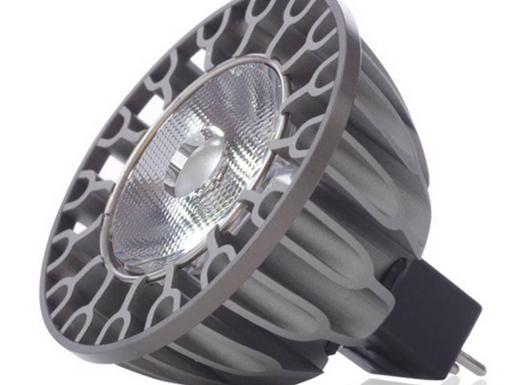
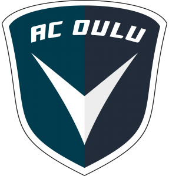

Pääomasijoitukset - CapMan
 Rahastot Media Osakkeenomistajat fi en fi CapMan Pääomasijoitukset Yrityksille Growth Buyout Credit Kiinteistösijoitukset Infra Palvelut
Sitoutuneet tiimit rakentavat yritysten kasvupolkuja monipuolisesti
Pääomasijoittaminen CapManilla
Merkittävät vähemmistösijoitukset
Growth
KOHTEET
Yrittäjävetoiset kasvuyritykset
FOKUS
Vähemmistösijoitukset pieniin ja keskisuuriin yrityksiin vaihtoehtona määräysvaltasijoitukselle
TARJOAMME
Aktiivinen vähemmistöomistaja, jolla on runsaasti näyttöä yritysten menestyksekkäästä kehittämisestä
Pohjoismainen enemmistösijoittamisen pioneeri
Buyout
KOHTEET
Listaamattomat kasvavat yritykset, joilla vahva kassavirta ja voittaja-asennetta
FOKUS
Enemmistösijoitukset ja keskisuuret yrityskaupat Pohjoismaissa
TARJOAMME
Pohjoismaisen Helsingissä ja Tukholmassa toimivan tiimin, 30 vuotta kokemusta ja vahvat, paikalliset verkostot
30+
kohdeyritystä
120+
sijoitusammattilaista ja neuvonantajaa
Irtautumisia
Sitoutuneet sijoitustiimit ja kokeneet neuvonantajaverkostot
Meillä on runsaasti kokemusta kasvustrategioiden kehittämisestä ja implementoinnista, kansainvälisten organisaatioiden luomisesta, yrityskaupoista ja rahoituksen järjestämisestä.
Johtava pohjoismainen pääomasijoittaja. Lue lisää kohteistamme:
Growth BuyoutCredit
Erikoistunut pohjoismainen velkasijoittaja
CapManin toteuttaa credit-strategiaansa kahden velkarahaston kautta, joiden neuvonantajana toimii CapMan-konserniin kuuluva itsenäinen partnership.
Nest Capital toimii neuvonantajana kahdelle yhteensä 200 milj. euron suuruiselle rahastolle, jotka tekevät pääosin unitranche- ja mezzanine-muotoisia velkasijoituksia Pohjoismaissa toimiviin pieniin ja keskisuuriin yrityksiin.
Mezzanine-, eli välirahoitus, rahoitus on ollut osana CapManin sijoitustoimintaa vuodesta 1995 lähtien. CapMan on kerännyt yhteensä lähes 700 milj. euron sitoumukset mezzanine-rahastoihin ja tehnyt tähän mennessä mezzanine-sijoituksen yli 50 yritykseen Pohjoismaissa.
Nest CapitalLatest in private equity
CapMan Growth perustaa uuden kasvusijoitusrahaston – ensimmäinen sijoitus äänenkäsittelyohjelmistoja kehittävälle Neural DSP:lle
Growth
elo 06, 2020
CapMan Growthin toinen 97 miljoonan euron rahasto ylitti tavoitekokonsa – Growth mukaan vauhdittamaan ohjelmistoteknologiayritys Unikien kasvua
Growth
marras 19, 2020
CapMan Growthin portfolioyritykset Vuoden yrittäjä -palkittujen joukossa
Growth
loka 19, 2020
Kaikki uutiset
Growth
TilaaVastaanota tiedotteita ja CapManin tarinoita suoraan sähköpostiisi
Tilaa
Vastaanota sinua kiinnostavia CapMan-uutisia suoraan sähköpostiisi
Helsinki
Ludviginkatu 6, 4 fl.
00130 Helsinki
Tukholma
Stureplan 13, 3rd fl
111 45 Stockholm
Kööpenhamina
Østergade 4, 4. sal
1100 København K
Lontoo
1 Lyric Square
London W6 0NB
Luxemburg
1B Heienhaff
L-1736 Senningerberg
